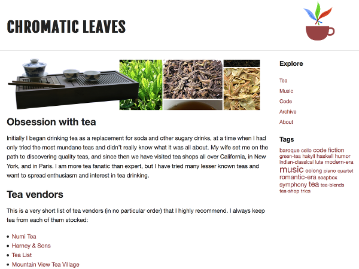
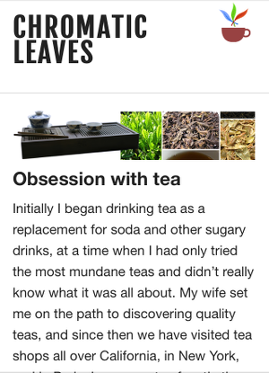
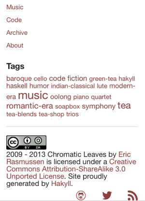

Smart Static Sites
with Hakyll
-Eric Rasmussen
Back to the 90's
Eric's home page!!!


Maybe not those 90's
But static sites are coming back in style
What are static site generators?
- think of them as build tools
- turn any input into html
- rebuild when content changes
But really... why?
- minimalism
- reduce security concerns
- version control
- it's fun
Text format of your choice
- markdown
- ReSTructured text
- LaTeX
- MediaWiki
Syntax highlighting
match ("about.markdown" .||. "commands.markdown") $ do
route $ setExtension "html"
compile $ pandocCompiler
>>= applyBase
>>= relativizeUrls
"What's hard to ignore about all these platforms is that, your dad will never blog like this."
-Mike Bayer (author of SQLAlchemy)
Why not?
- takes time to configure
- the wild wild west
- geek factor
Hakyll
Rules-Based EDSL
configuration via code
match ("images/*" .||. "js/**") $ do
route idRoute
compile copyFileCompiler
match ("css/*" .||. "css/icons/*" .||. "foundation/*") $ do
route $ setExtension "css"
compile sassCompiler
Features
- dependency resolution
- simple file metadata
- snapshots (during build)
Hakyll built-ins
- tags and tag cloud rendering
- rss/atom feed generation
- code syntax highlighting
- templating
Example: render posts
match "posts/*" $ do
route $ setExtension "html"
compile $ pandocCompiler
>>= saveSnapshot "content"
>>= loadAndApplyTemplate "templates/post.html" postCtx
>>= loadAndApplyTemplate "templates/base.html" baseCtx
>>= relativizeUrls
Example: create an atom feed
create ["atom.xml"] $ do
route idRoute
compile $ do
loadAllSnapshots "posts/*" "content"
>>= fmap (take 10) . recentFirst
>>= renderAtom (feedConfiguration "All posts") feedCtx
Example: create a context
defaultPostCtx :: Tags -> Context String
defaultPostCtx tags = mconcat
[ dateField "date" "%B %e, %Y"
, tagsField "tags" tags
, defaultContext
]
Example: sass/scss compiler
sassCompiler :: Compiler (Item String)
sassCompiler =
getResourceString
>>= withItemBody (unixFilter "sass" ["-s", "--scss"])
>>= return . fmap compressCss
Pandoc
- Swiss-army knife of markup
- Can parse several markdown/markup formats
- Can output to html, tex, pdf, and other formats
Go dynamic with javascript
- visual effects
- indexed search (sphinx)
- comments (Disqus, Branch)
- live feeds (twitter, app.net)
The Haskell Connection
- You don't need to know Haskell for Hakyll
- But know that Haskell is awesome
- Modern type systems are expressive and productive
- Beginner friendly community
Drawbacks
Haskell is... too awesome?
"a monad is a monoid in the category of endofunctors, what's the problem?"
For complex sites
- Haskell knowledge likely required
- DSLs can be hard to hack on
- but there are open source examples
Where to begin
The Hakyll tutorials are a great starting point
But if you already have a favorite language, try:
- pelican (python)
- jekyll (ruby)
- nanoc (ruby)
- middleman (ruby)
- high_voltage (ruby)
(ruby devs like DSLs)
(but you can find examples in most languages)
A word of caution
The good news: typically no proprietary format or DB, but...
- Static site generators come and go
- Prepare for breaking changes/tinkering
- No security patches! (good thing)
Deployment
- it's plain html and assets
- so you can deploy just about anywhere
- rsync -zrv mysite/ user@host:~/mysite/
- GitHub Pages (http://pages.github.com/)
CSS for non-designers
- Don't do it
- Just... don't

The easy way
- Use twitter bootstrap
- Or zurb foundation
- Learn grid systems and responsive classes
desktop

Use grid layouts to design big
mobile
 
Design small at the same time
SASS
- variables -- $blue: #3bbfce;
- functions -- darken($blue, 9%);
- like coding, but not
- reduces CSS
madnessboilerplate - compile with your build process
Choose your own adventure
Q&A
- haskell
- hakyll
- javascript + services
- responsive design